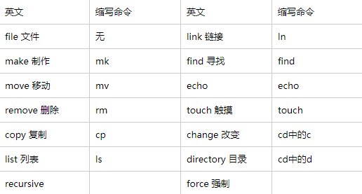
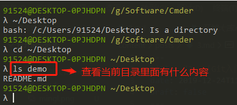
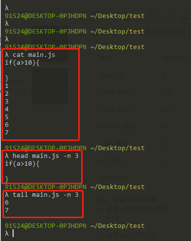
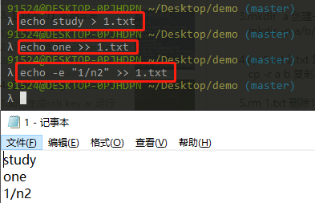
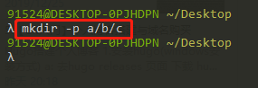
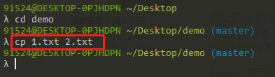
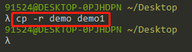
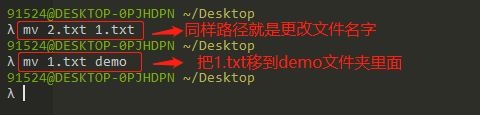

One minute
3 - [Git入门]bash命令行入门
1.文件查看操作
1.命令缩写，程序员把动词缩写，就变成了命令

2.查：查看文件或目录
- 查看当前目录绝对路径
pwd
- 查看当前目录内容
ls
查看指定目录内容
ls 目录名称
 - 查看文件内容
cat 文件名称(会显示全部内容)
head 文件名称(可以控制想看多少行，从开头开始显示)
tail 文件名称(可以控制想看多少行，从底部开始)

2.文件的增加删除操作
1.touch 1.txt
确定你路径在哪里，创建一个文件
3.文件(创建 追加 复制 删除)内容
1.echo mmp > 1.txt
向 1.txt 里面追加内容，最新的命令行会覆盖以前追加的信息
2.echo mmp » 1.txt
向 1.txt 里面追加内容，最新的命令行会叠加以前追加的信息
3.echo -e “1/n2” > 1.txt
向 1.txt 里面追加两行内容

4.mkdir demo-1
创建一个文件名字为 demo-1 的目录

mkdir -p a/b/c/d
创建多层目录

5.cp 1.txt 2.txt
复制 1.txt 内容为 2.txt

cp -r demo demo1
复制 demo 目录内容为 demo1

4.移动文件/目录 && 重命名文件/目录 都是同一个命令
1.mv 1.txt demo
把 1.txt 移动到 demo 目录上面

5.补充
code .
用编辑器打开当前目录( . 代表当前目录)
89 Words
2019-12-25 21:52 +0800
Read other posts